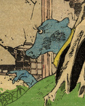

← 图鉴索引

木陰に見える鼠のような化物。全身が青い。
出典：親書誌：U426_nichibunken_0226：化物の嫁入；バケモノノヨメイリ／日付：2010／資源識別子：U426_nichibunken_0226_0033_0000
Copyright (c)2010- International Research Center for Japanese Studies, Kyoto, Japan. All rights reserved.